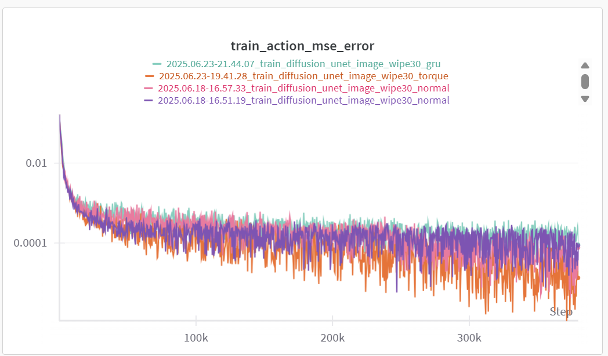

01 项目目的
目标：基于扩散模型，机械臂控制，加入力矩，完成真机适配典型任务。
科研经历
目标：基于扩散模型，机械臂控制，加入力矩，完成真机适配典型任务。
目标：基于扩散模型，机械臂控制，加入力矩，完成真机适配典型任务。
输入 Obs 改成双图像 + 末端姿态 6 维 + 力矩，输出动作改成 7 维。
使用 flow matching 替换原版的 unet_ddim 数据采集跑三种任务看效果
开始效果非常差，改善数据采集方式后略有提升
Diffusion policy 框架还算比较简单，但是了解然后能自己修改模型，修改参数也花了一些时间。
增加力矩后效果没有太大变化，没有解决。
视频 01
视频 02
图片 01
